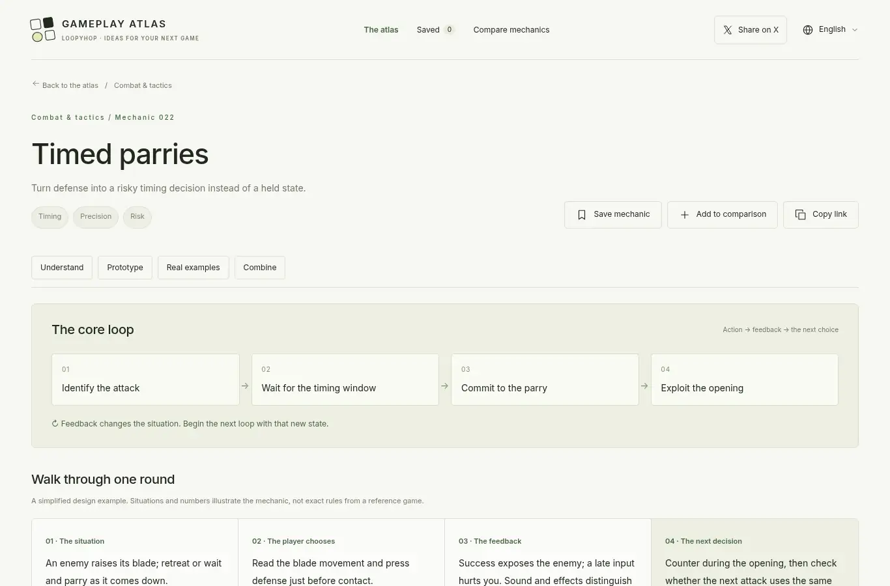

→ 打开原站 Gameplay Atlas（网站自带中文界面）
这是什么
Gameplay Atlas 的中文名叫「游戏玩法灵感库」，副标题是 A field guide to game mechanics——一本「游戏机制野外图鉴」。它不按游戏、也不按类型归档，而是把单个玩法机制当作最小单元：每个条目只讲一件事，比如「季节种植窗口」「传送带走线」「精准格挡」「推箱子与位置陷阱」。首页口号是 Unpack great play. Make something new.，定位很明确：写给个人开发者和小团队，帮他们看懂一个机制的循环、知道可以调哪些旋钮，然后从一个很小的原型开始做。
它是同一作者 loopyhop 系列的第二个站，前一个是游戏美术风格图鉴 Game Art Style（loopyhop.com 根域名目前就指向它）。一个管「长什么样」，一个管「怎么玩」。
五个要点
- 一条一个机制，共 280 条、28 组：从种田、钓鱼、烹饪、采集、生存，到自动化、建造、经营、卡组构筑、三消合成、单位指挥、战斗、移动、射击、潜行、塔防、节奏、驾驶、成长、社交、合作、对话叙事，覆盖面很宽。
- 每条都是同一套结构：核心循环（通常 4 步「行动 → 反馈 → 下一个选择」）、一回合走查、玩家在权衡什么、「先做这个」的最小原型、范围最容易膨胀的地方、试玩时该观察的问题、设计旋钮、跨游戏实例对照、以及「可以和什么组合」的原创提案。
- 落脚点是原型而不是百科：每条都会告诉你「最小可玩范围」该多小——例如季节种植只要一个 10 天日历加两种生长期不同的作物；精准格挡只要两种可读的敌人攻击加一个判定。
- 事实与观点分开标注：实例都附玩法来源（官方手册 / 商店页优先，必要时用标明的社区 Wiki）和图片来源；截图是真实游戏截图、不用 AI 生成；组合提案明确标为「原创设计提案，并非现有功能」。
- 无需账号、纯本地：收藏、对比、语言和「工作台笔记」都存在浏览器本地；内置多语言（含中文），切换语言不会把内容发给外部翻译服务。可以把几条机制加进「对比」，也有「随机来一个」帮你撞灵感。
谁做的
作者是 X 用户 五分之1蓝（@onefifthblue），个人简介写着「独立开发者｜一人公司」，并在简介里同时挂着「游戏玩法灵感库」和「游戏美术风格库」两个链接；两站都在 loopyhop.com 名下，页脚署名 Gameplay Atlas / loopyhop。他平时主要聊独立游戏、Steam 与用 AI 做游戏，并提到自己用 AI 做过好几个小游戏、但「玩法上我自己都不想玩」——这大概就是做这个库的动机。
发布帖（2026-10-22 17:22，新加坡时间）大意是：做游戏常常没灵感，又没时间大量玩游戏，所以做了这个以「玩法」为单元、收集并拆解各种游戏玩法、「从小原型开始」的网站。截至我们查看时该帖约 200+ 赞、270+ 收藏；随后前游戏策划 Rainy @jiangjiangling 的转介让它在中文游戏开发圈又传了一轮。
怎么组织的：28 组 · 280 个机制
左侧分类栏把 28 个机制组再归成 5 个大区（括号内为该组条目数，以站点 2026-10-21 的数据为准）：
| 大区 | 机制组 |
|---|---|
| 照料与维持 Care & sustain | 种田与生长（10）· 钓鱼与捕获（10）· 烹饪与食物（10）· 采集与挖矿（10）· 生存与需求（12）· 繁育与生态（8） |
| 生产与经营 Produce & manage | 制作与自动化（10）· 建造与空间（10）· 商业与贸易（11）· 收入与累积 / 放置（11） |
| 组合与分配 Combine & allocate | 背包与资源（10）· 谜题与推理（10）· 卡组与协同（12）· 三消与合成（10）· 单位协调（10）· 轮抽与分配（8） |
| 操控与应对 Control & respond | 战斗与战术（18）· 探索与路线（4）· 移动与穿越（15）· 瞄准与弹道（10）· 潜行与身份（11）· 防御与波次（9）· 节拍与时机（5）· 载具操控（5） |
| 成长与互动 Develop & interact | 成长与传承（12）· 社交与关系（10）· 合作与社交玩法（9）· 对话与事件选择（10） |
列表页可以搜索（「搜索动作、规则或设计问题」）、按「更多筛选」过滤，排序有「混合精选 / 新增优先 / 小原型优先 / 名称」几种。每张卡片显示参考游戏截图、机制名、一句话说明、原型规模标签（如「紧凑规则原型」或「需要联动系统」）、互动方式（如「单人决策」），展开即可看 4 步循环和两款实例游戏。每个条目也有独立 URL（如 /mechanic/combat-timed-parry/），站点提供 sitemap，方便分享和检索。
一个条目长什么样（以「精准格挡」为例）

以下是我们对该条目结构的概括（非逐句翻译）：
- 一句话：把防御从「按住不放的状态」变成「有风险的时机决策」。
- 核心循环：
- 识别攻击
- 等待时机窗口
- 按下格挡
- 利用破绽
- 一回合走查：敌人举刀 → 玩家读动作、在接触前按防御 → 成功则敌人露出破绽、晚了就挨打（音效与特效要能区分结果）→ 反击，并判断下一刀节奏是否相同。
- 玩家在权衡：格挡能抢回主动，闪避更安全；陌生招式值不值得冒险？多段连击考验的是连续的节奏识别。
- 原型建议：先做两种可读的敌人攻击、一个格挡判定和清晰的成功反馈；范围膨胀点在于动画、命中与输入时机的对齐；试玩时问玩家「刚才是早了还是晚了」，看反馈能否指导下一次。
- 真实案例：《只狼》（弹刀并积累架势、连段需要连续弹反）对照《死亡细胞》（盾反，还能反弹飞行物）——站点把「值得注意的差异」单独写出来。
- 组合提案：把格挡输入先用在「烹饪完成时机」这类无伤的节奏机关上，教会时机后再到战斗里考验识别——标注为原创提案。
另一个例子「季节种植窗口」也是同样套路：最小原型是一个 10 天日历 + 两种作物 + 收获日预览，并提醒先别加天气、病害等例外，否则玩家看不出决策为什么失败；实例对照《星露谷物语》和 Dinkum，结论是「借鉴时间窗口决策，而不是照搬收益表」。
它对「事实」和「编辑观点」的区分
About 页写得相当克制，这是它和一般「玩法清单」最不一样的地方：
- 每个案例都有玩法来源和图片来源，优先开发者文档与官方商店，必要时用明确标注的社区 Wiki；版本可能不同，以链接资料和游戏本身为准。
- 截图是真实游戏截图，「绝不是 AI 生成图或冒充机制的封面」；标为「System reference」的图只提供场景语境，不能单独证明动态规则。
- 循环是对交互的抽象；取舍、参数效果和组合提案属于编辑分析，不代表原设计者的意图，也不证明提案组合真实存在。
- 复杂度和互动方式描述的是建议中的最小原型，不是原游戏的规模或多人模式，也不是工期估算。
怎么用
- 找灵感：从一个你喜欢的机制出发，用「下一个想法 / 随机来一个」顺藤摸瓜，或者把 2–3 个机制加进「对比」看它们的循环差异。
- 开原型：直接照「先做这个」那一段搭最小可玩版本，用「试玩观察」那一句当验收问题。
- 和 AI 协作：条目的循环、旋钮、范围风险写得很结构化，适合作为给 AI 编程助手的玩法需求描述——这与作者前一个站 Game Art Style「把风格名直接发给 AI」的思路一脉相承（这是我们的推断，原站并未这样宣传）。
- 团队沟通：每条有固定 URL，可以把「我们要的是这种格挡」直接贴给同事。
评论
市面上的游戏设计资料大多按「游戏」或「类型」组织，Gameplay Atlas 把粒度压到单个机制，并且每条都强行收束到「最小原型 + 一个可观察的试玩问题」，这对小团队非常实用：它回答的不是「这个游戏为什么好玩」，而是「我明天能先做什么」。对「事实 / 编辑分析 / 原创提案」三者的显式区分，也比很多 AI 时代的内容站更严谨。
可以留意的局限：条目由编辑归纳，数量与分类仍在更新（比如「探索与路线」目前只有 4 条、「节拍」「驾驶」各 5 条）；实例多集中在近十年的知名独立 / 主机游戏；图片走外链，部分图床可能加载失败（站内会提示去原始来源查看）。它是灵感与起点，不是规则权威——站点自己也这么说。
本站相关
- 一个人用 AI 做 3D 武侠 ARPG：Tripo + Claude Opus 5.5 制作全过程——机制落地到具体游戏的例子，战斗类机制（格挡、架势、连段）可以对照着看。
- 每天一个设计风格 · Design Style——同样是「一期拆一种」的参考库，只是对象从玩法换成视觉风格。
- 设计资源大赏：@amananimates 帖子与评论区的 17 个设计资源——视觉/界面资源清单，可与 Game Art Style、本站玩法库互补。
来源与授权
- 原站：https://gameplayatlas.loopyhop.com/（About：/about/）；robots.txt 允许抓取，本页仅参考公开页面，未调用任何接口。
- 作者：五分之1蓝 @onefifthblue / loopyhop；发布帖 x.com/onefifthblue/status/2113199407852401146。
- 授权：未声明开源或 CC 许可，视为保留所有权利；本页为中文导读，仅短摘引，不复制条目正文。游戏截图与商标归各自所有者。
- 删除请求：在 GitHub 提交。